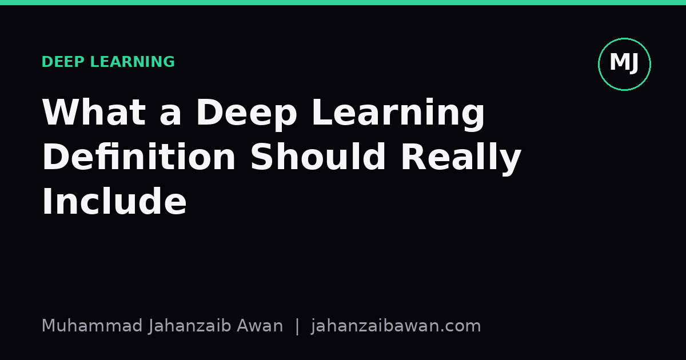

What a Deep Learning Definition Should Really Include
Most glossaries describe stacked layers and gradients, but they skip the parts that actually explain why depth works and when it fails.

The definition everyone copies
Open almost any glossary and you get some version of the same sentence: deep learning is a subset of machine learning that uses neural networks with many layers to learn from data. It is not wrong, but it is thin. It tells you the shape of the thing without telling you why the shape matters. You could memorise that definition, pass a quiz on it, and still have no working intuition for why a twelve layer network behaves so differently from a two layer one trained on the same data.
The missing piece is almost always the same: these definitions describe the architecture rather than the behaviour it produces. A good definition should explain what depth actually buys you, not just that depth exists. Otherwise you are left with a description of plumbing rather than an explanation of what the water does.
I think this matters beyond pedantry. People who only know the glossary version tend to assume that adding layers is a free upgrade, or that deep learning is simply a fancier form of curve fitting with a marketing budget. Neither assumption survives contact with a real project.
What is actually missing: representation learning
The part most definitions skip is that deep networks learn their own features rather than relying on features you hand-craft. In classical machine learning, you might engineer inputs yourself: edge density, word counts, ratios between measurements. The model then learns a mapping from those engineered features to an output. In a deep network, early layers typically learn simple patterns, and later layers combine them into increasingly abstract ones, without you specifying what those patterns should be.
Take a concrete example: a network trained to classify photographs of handwritten digits. The first layer might respond to short edges and curves. The second layer might combine edges into loops and strokes. By the fifth or sixth layer, the network might be responding to shapes that correspond to whole digit segments, learned entirely from the pixel data and the labels, with nobody writing a rule that says 'a seven has a horizontal top stroke'. That automatic construction of a feature hierarchy is the actual mechanism that separates deep learning from a shallow model with the same number of parameters spread differently.
This matters practically because it changes what you should expect from the data. A shallow model with hand-crafted features can sometimes work well on a few thousand examples, because the feature engineering has already done the hard work of representation. A deep network asked to learn representations from scratch usually needs far more examples to discover useful patterns reliably, otherwise it tends to memorise noise instead of structure. A definition that skips representation learning also tends to skip this consequence, and students end up surprised when their deep model underperforms a decision tree on a dataset of two thousand rows.
The second omission: inductive bias and when depth helps
The second thing glossaries skip is the honest condition under which depth is actually useful. Depth is not a universal upgrade; it is a bet that the right decomposition into hierarchical features exists and is learnable from the available data. For images, audio, and text, that bet tends to pay off, because these domains have a natural compositional structure: pixels form edges, edges form shapes, shapes form objects. For small tabular datasets with a handful of independent-ish columns, that compositional structure often is not there, and adding layers mostly adds parameters without adding useful bias.
Here is a worked comparison that I find clarifying. Suppose you have a dataset of five thousand rows describing loan applications, with fifteen numeric and categorical features, predicting default. A gradient boosted tree ensemble will often reach, say, 0.82 AUC with careful tuning. A deep network with three or four hidden layers, trained on the same fifteen features, might reach something similar, perhaps slightly worse, and will usually take considerably more tuning effort and more careful regularisation to get there. The depth is not buying you anything because there is no rich compositional structure in fifteen tabular columns for the layers to discover. Compare that with an image dataset of similar size: a convolutional network will usually beat a tree-based model on raw pixels by a wide margin, because convolution encodes a strong and correct assumption about spatial locality that trees have no equivalent for.
A definition that includes this idea, that depth is a structural assumption rather than a generic capacity boost, gives you something a quiz-ready glossary sentence cannot: a way to predict, before you train anything, whether a deep approach is likely to be the right tool. That predictive power is the entire point of having a definition in the first place; it should let you reason about a case you have not seen yet, not just recognise the term when it appears in a slide deck.
A fuller definition and why it is worth the extra sentence
Putting this together, a more complete definition reads something like: deep learning is a family of methods that use layered neural networks to learn hierarchical representations directly from data, exploiting compositional structure in the input, and that this approach tends to outperform shallower or hand-engineered methods specifically when enough labelled data and compute are available to let that hierarchy be learned reliably rather than memorised. It is longer than the glossary version, and it should be, because it encodes three testable claims rather than one architectural fact: representation learning happens automatically, it depends on data volume, and it depends on the domain having real compositional structure to exploit.
None of this is exotic knowledge; it is the kind of thing that becomes obvious after you have trained a few models that underperformed expectations and had to work out why. But that is exactly why it belongs in the definition rather than being left as a lesson you have to learn the hard way. A glossary entry is supposed to save you that lesson, not postpone it.
If you take one practical habit from this, let it be the following: before reaching for a deep architecture on a new problem, ask whether the inputs have a compositional structure a hierarchy of layers could plausibly discover, and whether you have enough labelled examples for that discovery to generalise rather than memorise. If the answer to either is no, a simpler model is not a compromise; it is usually the correct engineering decision, and a definition of deep learning that cannot tell you that is not doing its job.